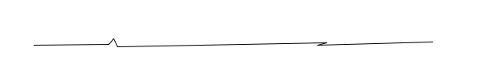

User Instructions:
There are 3 parts to this, setting up the storage (which must be a database), setting up the Shift Vector scenario to do a Rubber Sheeting process over the active themes, and setting up a Two Point Transformation process over the active themes.
Setting up the Storage
Select the database where the data is to be stored. Note that Oracle is supported via both the 'oracledb' and 'Devart' connectors.
Enter the database connection parameters and the SRID. The SQL can be written to a local file, in the user's home directory on both Windows and Linux, if that is wanted then check the 'Write SQL to (ASCII) File' CheckBox. The SQL can also be executed against the database directly, if that is wanted then check the 'Execute SQL against the Database' CheckBox. If both are wanted then check both CheckBoxes.
Click "Save Project File'. The Project file will be loaded everytime that database type is selected.
Click "Test Database Connection, User Name and Password" if there is a need to test the connection. The plugin will attempt to open the connection and create a 'testtable'.
The 'Delete the QGIS Selected Themes from Serv' button can be used to delete one or more themes from the database. This may be useful for several reasons such as MSSQL not accepting invalid coordinates, where one fixes a geometry in QGIS and needs to reload the theme, bearing in mind that MSSQL does not support 'IF EXISTS' on a 'DROP THEME' command. It is also useful for dropping themes when no longer needed.
The 'Process the QGIS Selected Themes to Serv' is how the SQL is generated and stored to file and/or executed to the database. As this is running, one can look at their home directory and see the SQL and/or TXT (Report) Files being created as each theme is processed.
Database specifics:
Postgres needs a schema to work in and is generally to easiest one to manipulate from SQL with the 'IF EXISTS' and 'IF NOT EXISTS' clauses. The SQL Files are compatible for PGAdmin 3 and 4, and DBeaver.
Oracle supports 4000 characters in client side SQL and 32700 characters with binding/clobs for the geometry so some very large features may not load. Thanks to Simon Greener for help with Bind Variables and Clobs. Oracle only supports schemas for the user themselves. The SQL Files are compatible for SQL Developer and DBeaver.
MS SQL does not support 'IF EXISTS' and 'IF NOT EXISTS' clauses so reprocessing can be tedious. Schemas are supported but seems to be simply prefixes to the table name. The SQL Files are compatible for MS SQL Server Admin, and DBeaver.
In all cases it falls to the user to have all the connection details sorted, so basically if DBeaver and other tools cannot connect then neither can this Plugin.
Rubber Sheeting Instructions:
There is a sample GeoPackage and QGIS Project provided. There must be a theme in the legend called 'stt_vectorvector' before the "Write out Rubber Sheeted X,Y" can be Ticked (and enabled). This theme must have a LineString geometry type and contain geometries containing the Shift Vectors. Mostly they represent joins between an older (less accurate) landbase/cadastre and a newer (more accurate) one. However they can be joins to a orthophoto, geodetic shifts, anything really.

Simply make the themes active and click "Process the QGIS Selected Themes" button to write out the Rubber Sheeted geometries to the destination. Note that the theme names will have an "_rs" appended to the theme name.
Turning on the "Rubber Sheeted Themes" will show the themes like the image below:
Whilst the Rubber Sheeting algorithm provided will do a reasonable job for most themes in most circumstances, there is no attempt at maintaining Rigid Themes (e.g. buildings), Straight Lines (e.g. power lines or sewer mains), Implied Vertical Topology (where a house sewer line joins (visually) a street sewer line and there is no matching point in the street sewer line - i.e. Vertical Topology), etc. As mentioned elsewhere, if you have these types of geometries, please contact the author who can help through a consultation process.
Two Point Transformation Instructions - with known CRS/SRIDs:
To access this, click "Two Point Transformation - known CRS/SRID" at the bottom right of the form.
A Two Point Transformation can be useful when geometries are found to be in the wrong location. Simply export those features to say a GeoPackage, open the themes in QGIS, make them active, set the transformation parameters and import them back into new themes in your database, and use QGIS to replace the original features.

Another use for this is to reproject themes and store them in your database.
Simply make the themes active and click "Process the QGIS Selected Themes" button to write out the Rubber Sheeted geometries to the destination. Note that the theme names will have an "_tp" appended to the theme name.
Two Point Transformation Instructions - Local Coordinates:
To access this, click "Two Point Transformation - Local Coordinates" at the bottom right of the form.
A Two Point Transformation can be useful when importing geometries such as airports, buildings, bridges, interchanges, landXML Survey Plans, etc, which are often in a Local Coordinate System.
Note: The 'Units' can say 'degrees', as below:
Coordinate Reference System (CRS)
|
Name |
Undefined geographic SRS |
|
Units |
degrees |
|
Method |
Lat/long (Geodetic alias) |
|
Celestial body |
Earth |
|
Reference |
Static (relies on a datum which is plate-fixed) |
|
Extent |
2062.0131835937500000,0.0000000000000000 : 2266.5377312982200237,242.7969452785899875 |
A good way to do this is to get the coordinates of one corner in the the source theme, get the coordinate of the same point in the GIS Coordinate System, work out any rotation and scale factors, and enter these in the form above.
Simply make the themes active and click "Process the QGIS Selected Themes" button to write out the Rubber Sheeted geometries to the destination. Note that the theme names will have an "_ltp" appended to the theme name.
Note: If the themes are in feet, treat it as metres but change the Scale Factor to 0.3048.
There is a LP026765_NoCRS.gpkg file with an Australian Survey Plan loaded, with no CRS/SRID assigned. This should simulate .DWG files loaded to .GPKG via QGIS's Import functionality. The QGIS Project file, "rubbersheeting.qgs" will display these as:
Running the "Two Point Transformation - Local Coordinates" will produce:
Specific Spatial Upgrade Items NOT Addressed by this RubberSheeting Algorithm
Maintain Straight Lines -> SL Tol in (cm): (and) Straighten -> Max Deflection Angle (Deg):
SAManager can detect those parts of LineString and MultiLineString themes that are ‘roughly’ straight, meaning that there is a set of consecutive points with a Peuker Douglas tolerance within the specified value, and where the maximum deflection angle is within the specified value. Once these straight lines are detected, these straight pieces can be maintained and straightened.
Much depends on the type of theme being processed.
If the theme is a cadastral layer, then there are many examples in older built up areas where nothing should be done to this line, i.e. it should remain where the black line is. E.g. when a two lot strata is being surveyed for subdivision the surveyor must pick up the centre of the common walls, but the walls were put in by a bricklayer and not necessarily straight, and can step sideways sometimes to avoid an obstacle.
If the theme is sewerage main, then almost certainly the black line should be converted to the red line, as sewerage mains are precast straight and are surveyed to be straight in the construction phase.
<- Maintain Implied Vertical Topology
SAManager can detect and maintain LineString start and end points which appear to be on top of another LineString theme, but where the start/end point is not in the other theme. An example of this would be a water feeder theme going from the mains into the lots, but where a water mains only includes its own start and end and bend points.

In the diagram above, the mains theme (Black) has the 2 nodes at A and B, nothing at b or any of the other side sewerage lines. However it is imperative for the side sewerage lines to remain on top of the mains theme no matter the shifts.
<- Maintain Intersection Bearing - (*** not proportion***)
Some themes such as water feeder/lateral pipes are often built at right angles from the mains to reduce costs. The often random direction and size of shift vectors along road frontages and around the lots will tend to rotate these lateral pipes. This option attempts to move the intersection point along the mains to keep the original intersection bearing.
There are limitations, as the intersection cannot be moved past the mains start or end points, or past any bend point, or past any other intersection point. Doing so would cause a ‘Z’ topology.

With the two Shift Vectors on the left, the angle at a would not be maintained. With this option the angle is maintained at b.
Scaled LineString Object
The geometric manipulation for this treatment is complicated, but generally works well in practice.
Some themes such as water and sewer mains can benefit from this processing.
Linestrings less than 400-500m are treated to a 2 point transformation using the start and end point.
Linestrings longer than this often have issues as the road frontage corners often shift in a way that cause undesirable offsets, and as such a 2 point transformation is not applied.
The offset to the nearest road boundary is calculated during the data loading process. This offset is used to nudge points back to the original offset during each iteration. This competes with all the other processes, but does have a good influence on the placement of these linestring features.
The nett result of this processing might be best described as adding a certain stiffness to the linestring, generally keeping the shape but accommodating road frontages that have changed more than most normally do.
Snap this Theme To 'Snap to Themes'
Some themes, such as suburbs, LGA and other Admin themes, often have missing/additional nodes along the Destination Landbase.
SAManager can detect this and
do the
necessary edits to have the theme co-incident with the Target Snap
to Themes.
This Theme Is a target 'Snap to Theme'
This is usually only the Destination Landbase. Suburb and other administration layers are often initially derived by merging cadastral/landbase parcels and doing any modification necessary.
As the cadastre evolves, these layers are often not maintained. When a new cadastre/landbase is derived via an upgrade project, nodes may be added or deleted or moved. Especially along circular arcs.
The act of rubbersheeting
moves the points
to their new position but does not reconcile any topological
differences.
Setting this flag triggers this process to run after the upgrade
has been
completed.
Remove Spikes -> Tol (mm):
Spikes, ‘V’ and ‘Z’ like shapes can be created with the above ‘non-upgrade’ options, and often exist in the original geometry.
Rigid Object support for Polygons (only)
This set of parameters defines how SAManager finds and processes groups of features within the current theme. The features are defined by a field name and a value in that field. E.g. The Field name might be ‘GroupId’, and all the features with the value of (say) ‘123’ are treated as the one feature.
Each point goes through the IBG process, being shifted by the shift vectors to give an adjusted coordinate. The adjusted coordinates for all the features within a group are compared with the original to compute an average X and Y shift, which is applied to all those point. If ‘Allow Rotation’ is checked, the two furthest apart points are used to compute a rotation. A Similarity Transformation is then applied to all those points.
Allow Rotation
This is set of the groups of features can be rotated.
SD Group Field Name:
This is the field name of the field holding the group value.
SD Group Name (*/value):
If there is a subset of the
group values
that should be processed, and not the other features, then this
can be used to
limit this processing to that subset.
Rigid Polygon Object
In some situation the original landbase has unreasonable bends and the GIS Operator puts in the Sewer/Water/Gas lines as (near) straight features. During a normal rubbersheeting process, the shift vectors introduce unwanted bends in the utility themes. Extracting the features in those areas and putting them into a theme and setting this flag will cause those features to be far more rigid.
The real features (due to vertical topology) are held rigid too, and greatly retain their original shape.
Installation Instructions:
QGIS 3.28 is recommended. Do not install Python, instead we will use the Python installed with QGIS. (Installing Python 3.12 on Windows causes problems)
All 3 database connectors must be installed otherwise to code will return errors. Alternatively the Python Source code can be modified to remove references to any unwanted connectors.
Ubuntu
pip3 install -U psycopg2
pip3 install -U oracledb
pip3 install -U pyodbc
Windows 10/11
On Windows the "PythonPath" Environment Variable must be set - be sure
to adjust this to your particular computer and QGIS Version:
PYTHONPATH
C:\Program Files\QGIS 3.28.15\apps\qgis\python;C:\Program Files\QGIS
3.28.15\apps\qgis\python\plugins;C:\Program Files\QGIS
3.28.15\apps\Qt5\plugins;C:\Program Files\QGIS 3.28.15\share\gdal;
C:\Program Files\QGIS 3.28.15\apps\Python39\Scripts\pip3 install -U
psycopg2
C:\Program Files\QGIS 3.28.15\apps\Python39\Scripts\pip3 install -U
oracledb
C:\Program Files\QGIS 3.28.15\apps\Python39\Scripts\ pip3 install -U
pyodbc